سرگرمی:
لینڈ فل پر ایک میٹھا زلزلہ
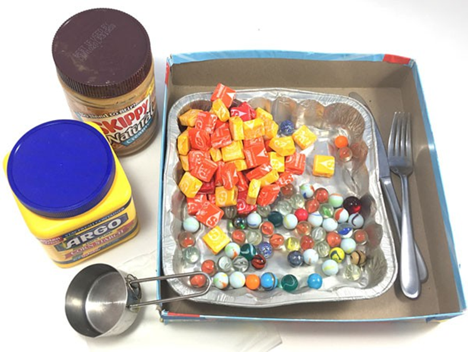
خلاصہ:
- فعال وقت
30-45 منٹ
- کل پروجیکٹ کا وقت
30-45 منٹ
- بنیادی خیال
زلزلہ، لیکیفیکیشن
تعارف:
کیا آپ نے کبھی سوچا ہے کہ کس قسم کی زمین پر عمارتیں تعمیر کی جاتی ہیں؟ چٹان، بجری، ریت، مٹی اور بہت سے دوسرے - "زمین" کی بہت سی مختلف قسمیں ہیں۔ اور یہ مسئلہ ان علاقوں میں خاص طور پر اہم ہو جاتا ہے جہاں زلزلے آنے کے امکانات ہوتے ہیں۔ اس سرگرمی میں آپ گھریلو شیک ٹیبل پر ایک میٹھی عمارت بنائیں گے اور معلوم کریں گے کہ لینڈ فل پر تعمیر کی گئی عمارتوں پر زلزلہ کیسے اثر انداز ہوتا ہے۔ زلزلے کے ڈرامے میں آپ کا ڈھانچہ کیسے کام کرے گا؟
مواد:
- • قصاب کا کاغذ یا اخبار
- مومی کاغذ
- گیلا کپڑا
- Starburst® کینڈی یا شوگر کیوبز (40 یا اس سے زیادہ)
- بغیر ہلچل مونگ پھلی کا مکھن یا متبادل، جیسے سویا مکھن یا سورج مکھی کے بیجوں کا مکھن
- چمچ یا مکھن چاقو
- کارن اسٹارچ
- پانی
- ماپنے کا کپ
- اتلی باکس
- سنگ مرمر یا ایک جیسی چھوٹی گیندیں (1 سے 2 درجن)
- اتلی ٹرے جو آپ کے اتلی باکس سے چند انچ چھوٹی ہے۔ (ایلومینیم کیک ٹرے اچھی طرح کام کرتی ہیں۔)
- کانٹا
- اختیاری: پیلا کھانے کا رنگ
تیاری کا کام:
- اپنے کام کے علاقے کو قصاب کے کاغذ یا اخبار سے محفوظ کریں۔ یہ صفائی کے وقت کو تیز کرے گا۔ جب آپ کے ہاتھ بہت چپچپا ہو جائیں تو انہیں صاف کرنے کے لیے ایک گیلا کپڑا تیار رکھیں۔
- اپنے سامنے پانچ انچ مربع یا اس سے بڑے مومی کاغذ کا ایک ٹکڑا رکھیں۔ موم کا کاغذ گھر کو ٹیسٹ مٹی پر رکھنا، اور جانچ کے بعد گھر کو ہٹانا آسان بناتا ہے۔
- سٹاربرسٹ کینڈیوں کو کھولیں، اور مونگ پھلی کے مکھن کے برتن کو کھولیں۔ کینڈی آپ کے ڈھانچے کی اینٹیں ہوں گی۔ مونگ پھلی کا مکھن مارٹر کے طور پر کام کرے گا جو اینٹوں کو ایک ساتھ رکھتا ہے۔
- ایک چمچ، ایک مکھن چاقو یا ایک انگلی سے تھوڑا سا مونگ پھلی کا مکھن نکالیں۔ اسے کینڈی کے کنارے پر لگائیں اور اس کے خلاف دوسری کینڈی چپکا دیں۔ عمارت بنانے کے لیے اس عمل کو دہرائیں۔ آپ اپنی پسند کا کوئی بھی ڈھانچہ بنا سکتے ہیں، لیکن اسے آپ کی ٹرے کے اندر اچھی طرح فٹ ہونے کی ضرورت ہے۔
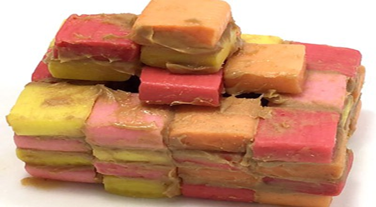
- مومی کاغذ کو کاٹیں تاکہ عمارت کے ہر طرف تقریباً ایک سے دو انچ کا کاغذ رہ جائے۔ عمارت کو مومی کاغذ پر ایک طرف رکھیں جب تک کہ آپ اسے جانچنے کے لیے تیار نہ ہوں۔
- اس مرکب کو تیار کرنے کے لیے جو زلزلے کے دوران لینڈ فل کے رد عمل کی نقل کرے، تین کپ کارن اسٹارچ کو اتلی ٹرے میں ڈالیں، اور ڈیڑھ کپ پانی ڈالیں۔ اگر دستیاب ہو تو پیلے رنگ کے کھانے کے رنگ کے چند قطرے شامل کریں۔ اسے اچھی طرح مکس کرنے کے لیے کانٹے یا اپنے ہاتھوں کا استعمال کریں۔ کارن اسٹارچ کے آمیزے کی صحیح مستقل مزاجی حاصل کرنا ضروری ہے۔ یہ آپ کی جانچ کی عمارت کو سہارا دینے کے لیے کافی مضبوط ہونا چاہیے — لیکن پھر بھی اتنا مائع ہے کہ جب آپ کسی ٹکڑے کو کھینچتے ہیں تو یہ آہستہ آہستہ بہنے لگتا ہے۔ مزید مکئی کا سٹارچ شامل کریں اگر مکسچر پر رکھی کینڈی آہستہ آہستہ ڈوب جائے، یا اگر یہ نہ نکلے تو مزید پانی ڈالیں۔ بیٹھو ایک طرف.
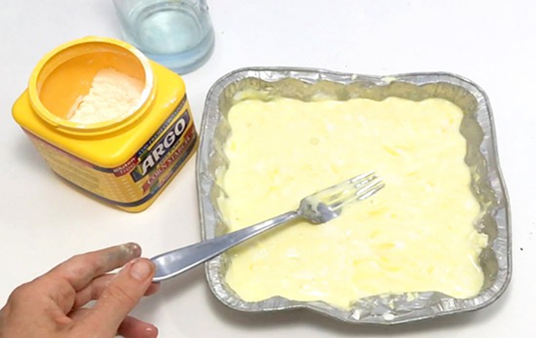
- اپنی شیک ٹیبل کو جمع کرنے کے لیے، اتلی باکس کو اپنے سامنے رکھیں۔ ماربلز کو باکس میں ڈالیں، اور ٹرے کو کارن اسٹارچ مکسچر کے ساتھ سیٹ کریں تاکہ یہ ماربلز کے اوپر ٹکی ہو۔ جب آپ باکس کو ہلاتے ہیں تو ٹرے کو آگے پیچھے یا ایک طرف جھکنا چاہیے کیونکہ یہ سنگ مرمر کے اوپر گھومتی ہے۔ ٹرے کے ہلنے کا طریقہ زلزلوں میں دیکھے جانے والے ایک دوسرے کے ساتھ ہلنے کی نقل کرتا ہے۔
طریقہ کار
- اپنی شیک ٹیبل کو ہلانے کی مشق کریں۔ اسے تیزی سے لیکن آہستہ سے کافی اور دائیں سائز کی حرکات کے ساتھ ہلائیں تاکہ ٹرے باکس کے اطراف سے نہ ٹکرائے۔
- اپنی عمارت کو کارن اسٹارچ کے مکسچر کے اوپر رکھنے کے لیے ویکس پیپر کا استعمال کریں۔ غور سے دیکھئے. آپ کی عمارت کو کارن سٹارچ پر بیٹھنا چاہیے جس کے درمیان صرف موم کا کاغذ ہو، لیکن اسے اندر نہیں ڈوبنا چاہیے۔ اگر آپ کی عمارت گیلی ریت میں قدموں کے نشان کی طرح مکسچر میں پرنٹ بناتی ہے تو یہ ٹھیک ہے۔ اگر یہ آہستہ آہستہ نیچے ڈوب جاتا ہے، تاہم، آپ کا مرکب بہت گیلا ہے۔ مومی کاغذ پر اپنی عمارت کو ہٹا دیں، مزید کارن اسٹارچ میں مکس کریں، اور دوبارہ کوشش کریں۔
آپ کے خیال میں جب آپ باکس کو تیزی سے ہلائیں گے تو آپ کے ڈھانچے کا کیا ہوگا؟
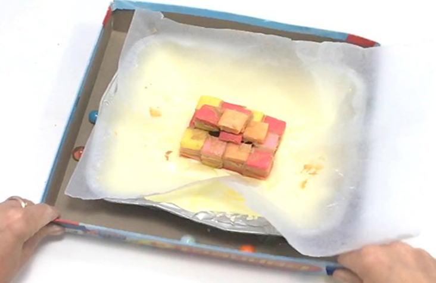
- یاد رکھیں کہ مکان کس طرح مرکب کے اوپر کھڑا ہے۔ اگر آپ کے پاس کیمرہ دستیاب ہے تو تصویر لیں۔
- باکس کو اتنی تیزی سے ہلائیں کہ کارن اسٹارچ کے آمیزے والی ٹرے آگے پیچھے ہلتی رہے لیکن باکس کے کنارے سے نہ ٹکرائے۔ جیسا کہ آپ مشاہدہ کرنے کے لیے وقفہ لینے سے پہلے باکس کی گنتی کو 20 تک ہلاتے ہیں۔
کیا عمارت میں کوئی تبدیلی آئی ہے؟ کیا آپ دراڑوں کے آثار دیکھ سکتے ہیں؟ کیا عمارت مرکب میں گہرائی میں ڈوب گئی؟ آپ کے خیال میں کیا ہوگا اگر آپ زیادہ طاقت سے ہلائیں گے — یا زیادہ دیر تک؟
- اسے آزمائیں! آہستہ آہستہ اس قوت میں اضافہ کریں جس کے ساتھ آپ باکس کو ہلاتے ہیں، اس بات کو یقینی بناتے ہوئے کہ ٹرے کو باکس کے اطراف میں نہ لگنے دیں۔ ہلاتے وقت اے بی سی گانا دو بار گائیں (یا تقریباً 20 سے 30 سیکنڈ تک ہلائیں)۔ جب آپ ہلاتے ہو تو کارن اسٹارچ کے آمیزے کو دیکھیں۔
کیا آپ کارن اسٹارچ کے مرکب کو تقریباً ایک بہت موٹے مائع کی طرح حرکت کرتے دیکھ سکتے ہیں؟
- نقصان کا اندازہ لگائیں۔
کیا آپ کا ڈھانچہ اب بھی کھڑا ہے؟
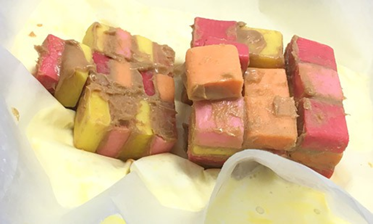
- قریب سے دیکھیں۔
اگر عمارت اب بھی کھڑی ہے، کیا یہ مرکب کے اوپر کھڑی ہے، یا یہ مرکب میں گہرائی میں دھنس گئی ہے؟ اگر عمارت ٹوٹ گئی تو کیا وہ ٹکڑے مرکب کے اوپر پڑے ہیں، یا وہ مرکب میں دھنس گئے؟ ایسا کیوں ہوگا؟
- گھر کو ہٹانے کے لیے ویکس پیپر کا استعمال کریں۔ آپ دوسرے گھر کو جانچنے کے لیے مرکب کو دوبارہ استعمال کر سکتے ہیں۔
- آمیزے میں انگلی ڈالیں۔
کیا مرکب مضبوط محسوس ہوتا ہے؟
- اپنے دوسرے ہاتھ سے باکس کو زور سے ہلاتے وقت دھکیلتے رہیں۔
کیا آپ کی انگلی مرکب میں ڈوب جاتی ہے؟ کیا یہ ایک بہت موٹی مائع میں ہونے کی طرح محسوس ہوتا ہے؟ ایسا کیوں ہوگا؟
سرگرمی:
رنگین ڈبل ہیلکس، ایک جین-ius سرگرمی
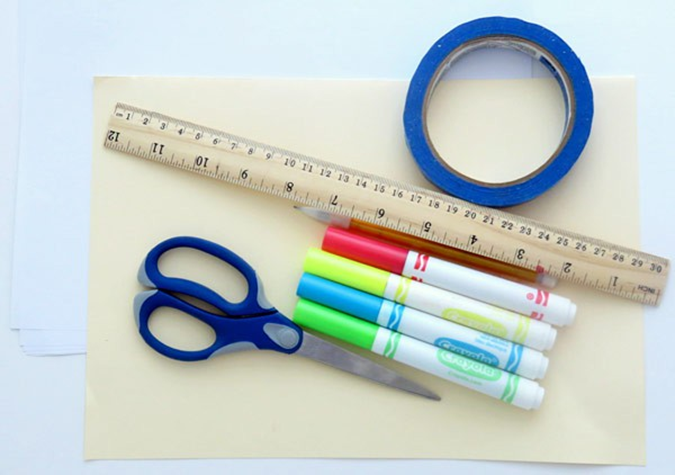
خلاصہ:
- فعال وقت
45 منٹ سے 1 گھنٹہ
- کل پروجیکٹ کا وقت
45 منٹ سے 1 گھنٹہ
- بنیادی خیال
ڈی این اے، ڈبل ہیلکس
تعارف:
کبھی سوچا ہے کہ ڈی این اے، زندگی کی شکل کا جینیاتی خاکہ کس طرح انکوڈ کر سکتا ہے اور معلومات کو منتقل کر سکتا ہے کہ اس زندگی کی شکل کو کیسے بڑھنا اور برقرار رکھا جا سکتا ہے؟ جس طرح ایک کک بک ڈش کے لیے ایک مکمل نسخہ پر مشتمل ہوتی ہے، اسی طرح ڈی این اے کسی جاندار کی زندگی کے لیے ترکیب کو ذخیرہ کرتا ہے۔ اگرچہ ہر انسان کا ایک منفرد ڈی این اے ترتیب ہے، لیکن ہم سب کا ڈی این اے تقریباً 99.9 فیصد ایک جیسا ہے! اس سرگرمی میں، آپ ڈی این اے کے ایک مختصر حصے کے لیے ایک ماڈل بنائیں گے — یہ سمجھنے کے لیے کافی ہے کہ ڈی این اے کیسا ہے اور یہ زندگی کو کیسے انکوڈ کرتا ہے۔
مواد:
- ٹیپ، تقریباً 2 سینٹی میٹر چوڑا اور 1.5 میٹر لمبا
- کارڈ اسٹاک یا مضبوط کاغذ
- سرخ، پیلا، نیلا، اور سبز مارکر
- حکمران
- پینسل
- قینچی
- ایک ساتھی
- کمبل یا کاغذ کی چادریں۔
تیاری کا کام:
کارڈ اسٹاک سے 40 سٹرپس کاٹیں، ہر ایک 4 سینٹی میٹر ضرب 1 سینٹی میٹر۔ ہر پٹی کو پنسل لائن کے ساتھ تقسیم کریں تاکہ یہ دو مستطیلوں پر مشتمل ہو جو ہر ایک 2 سینٹی میٹر x 1 سینٹی میٹر ہیں۔
طریقہ کار:
- ڈی این اے چار کیمیکلز کا استعمال کرتے ہوئے زندگی کی شکل کے جینیاتی بلیو پرنٹ کو انکوڈ کرتا ہے۔ یہ ایک لمبا مالیکیول ہے جو تھوڑا سا رسی کی سیڑھی کی طرح لگتا ہے، صرف 200,000,000 گنا چھوٹا! لمبی "سیڑھی" کو گھڑی کی سمت موڑ دیں، اور آپ دیکھ سکتے ہیں کہ ڈی این اے کو "ڈبل ہیلکس" کیوں کہا جاتا ہے۔ نیچے دی گئی ہدایات ڈی این اے کے ایک ٹکڑے کا ماڈل بناتی ہیں۔ یہ واضح کرے گا کہ ڈی این اے کیا ہے اور کیسا لگتا ہے!
- ڈی این اے حیاتیات کو برقرار رکھنے اور بڑھنے کے لیے ڈیٹا کو انکوڈ کرنے کے لیے چار کیمیکلز (حروف A، T، C اور G سے مخفف) استعمال کرتا ہے۔ ہم ان میں سے ہر ایک کیمیکل کی نشاندہی کرنے کے لیے رنگ استعمال کریں گے: سرخ، نیلا، پیلا اور سبز۔ یہ کوڈ کیمیکل بہت خاص ہیں، یہ ہمیشہ مخصوص طریقوں سے جوڑتے ہیں: ایک جوڑا T اور C کے ساتھ G کے ساتھ۔ آپ کے ماڈل میں، سرخ صرف نیلے کے ساتھ اور پیلا صرف سبز کے ساتھ ملتا ہے۔ تقسیم کرنے والی لائن کے دونوں طرف 4 سینٹی میٹر x 1 سینٹی میٹر کی پٹیوں کو رنگین کریں تاکہ آپ کے پاس سرخ نیلی پٹیاں اور پیلے سبز سٹرپس ہوں۔ رنگوں کے کسی دوسرے امتزاج کی اجازت نہیں ہے۔ انہیں آگے اور پیچھے ایک جیسا رنگ دیں۔ نوٹ کریں کہ آپ کے جسم میں، یہ جوڑے چھوٹے ہیں اور رنگین نہیں ہیں! ہم نے انہیں بڑا اور رنگین بنایا ہے تاکہ ماڈل خوبصورت اور سمجھنے میں آسان ہو۔ آپ کے ڈی این اے کی لمبائی تقریباً 3 بلین جوڑوں کی ہے، اس لیے آپ ڈی این اے کے صرف ایک ٹکڑے کا نمونہ بنائیں گے — پوری ترتیب کو نہیں!
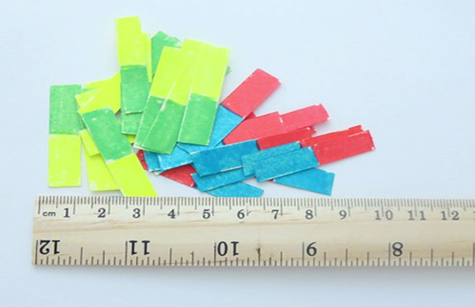
- ڈی این اے ایک بٹی ہوئی رسی کی سیڑھی کی طرح لگتا ہے۔ آپ کے ماڈل کے لیے، آپ سب سے پہلے سیڑھی کے "ریڑھ کی ہڈی" کے اطراف بنائیں گے اور پھر "جوڑی" کے کنارے جوڑیں گے۔ ٹیپ کے دو ٹکڑے کاٹ کر شروع کریں، ہر ایک 65 سینٹی میٹر لمبا۔ انہیں میز پر ایک دوسرے کے متوازی، چپچپا سائیڈ اوپر رکھیں، جس کے درمیان تقریباً 2 سینٹی میٹر جگہ ہو۔ جب آپ جوڑے شامل کرتے ہیں تو دو ریڑھ کی ہڈیوں کو جگہ پر رکھنے کے لئے ٹیپ کے دو اضافی ٹکڑے استعمال کریں۔
- کوڈ کیمیکلز کے جوڑوں کو اپنے DNA بیک بون سے جوڑنے کے لیے، کاغذ کی ایک تیار شدہ پٹی (ایک جوڑا) چنیں اور ایک سرے کو ایک ریڑھ کی ہڈی پر اور دوسرے سرے کو دوسری متوازی ریڑھ کی ہڈی سے چپکا دیں جیسا کہ تصویر میں دکھایا گیا ہے۔
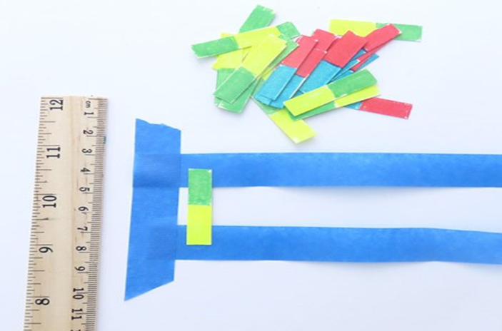
- ریڑھ کی ہڈیوں پر مزید سٹرپس (جوڑے) چسپاں کریں تاکہ وہ متوازی دائیں بن جائیں۔ پنڈلیوں کے درمیان تقریباً ایک سینٹی میٹر جگہ چھوڑ دیں۔ یہ اس وقت تک کریں جب تک کہ آپ کی ریڑھ کی ہڈی ایک سرے سے دوسرے سرے تک جوڑوں کے ذریعے جڑی نہ ہو۔
- ٹیپ کے اضافی ٹکڑوں کو ہٹا دیں جو میز پر ریڑھ کی ہڈیوں کو محفوظ رکھتا ہے اور ٹیپ کی ہر لائن کو درمیان میں لمبائی کی طرف جوڑ دیں۔ ٹیپ جوڑوں کے سروں پر تہہ کرے گی، انہیں ٹیپ کے جوڑے ہوئے ٹکڑوں کے درمیان ٹھیک کرے گی جیسا کہ تصویر میں نیچے کی ریڑھ کی ہڈی کے لیے دکھایا گیا ہے۔
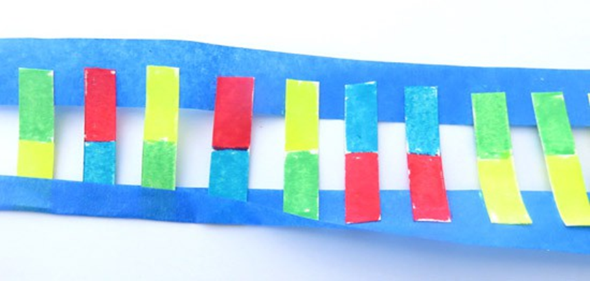
- آپ کا ماڈل تقریباً ختم ہو چکا ہے! ایک تفصیل غائب ہے: ڈی این اے مڑا ہوا ہے۔ اپنی سیڑھی کے ایک سرے کو پکڑو اور اپنے ساتھی سے دوسرے سرے کو پکڑو۔ اپنے اختتام کو گھڑی کی سمت میں چند بار موڑیں۔
جب آپ اپنے ڈی این اے ٹکڑے کو موڑتے ہیں تو اس کی لمبائی کا کیا ہوتا ہے؟ کیا آپ دیکھتے ہیں کہ ڈی این اے کو ڈبل ہیلکس کیوں کہا جاتا ہے؟
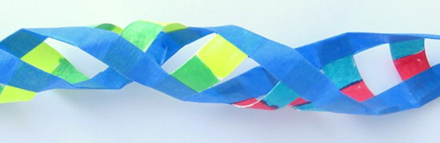
- ڈی این اے کسی بھی اسٹرینڈ میں موجود معلومات کا استعمال کرتے ہوئے خود کو نقل کر سکتا ہے، اور آپ بھی کر سکتے ہیں۔ جانچنے کے لیے، اپنے ڈی این اے ماڈل کو موڑ دیں اور اسے میز یا زمین پر رکھ دیں۔ جیسا کہ شکل میں دکھایا گیا ہے کاغذ یا کمبل کے ساتھ ایک اسٹرینڈ (ہر ایک جوڑے کے ایک طرف والی ریڑھ کی ہڈی) کو چھپائیں۔ آپ کا کام سیکشن کو مکمل کرنے کے لیے ڈی این اے ماڈل بناتے ہوئے حاصل کردہ علم کو استعمال کرنا ہے۔
ہر نظر آنے والے رنگ (کوڈ کیمیکل) کے لیے، کیا آپ بتا سکتے ہیں کہ کون سا رنگ (کوڈ کیمیکل) چھپا ہوا ہے؟ (اشارہ: مدد کے لیے طریقہ کار کے دوسرے مرحلے کو واپس دیکھیں)
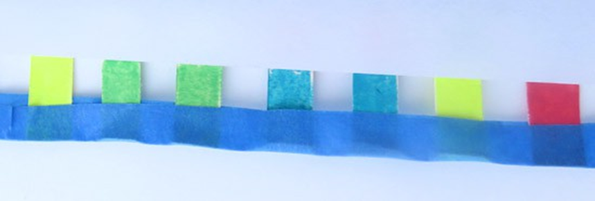
- انسانی ڈی این اے کی لمبائی کا اندازہ لگانے کے لیے، اپنے ڈی این اے سیکشن میں جوڑوں کی تعداد شمار کریں۔ انسانی ڈی این اے تین ارب جوڑوں پر مشتمل ہے۔
کیا آپ اندازہ لگا سکتے ہیں کہ اگر آپ تین بلین جوڑوں کو ماڈل بناتے ہیں تو آپ کا ماڈل کتنا لمبا ہوگا؟
- اپنے حکمران کو لے لو اور پیمائش کریں کہ جب آپ کا ڈی این اے مالیکیول غیر موڑتا ہے تو کتنا چوڑا ہوتا ہے۔ ایک حقیقی DNA مالیکیول تقریباً دو نینو میٹر یا ایک ملی میٹر (2÷1,000,000 ملی میٹر) چوڑا ہے۔
آپ کا ماڈل ایک حقیقی ڈی این اے مالیکیول سے کتنا بڑا ہے؟
سرگرمی:
ایک منی ٹریبوچیٹ بنائیں
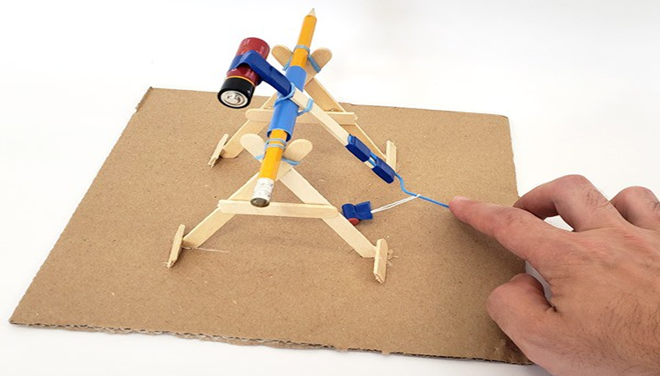
خلاصہ:
تعارف:
آپ شاید جانتے ہیں کہ کیٹپلٹ کیا ہے۔ قرون وسطیٰ میں فوجیں انہیں قلعے کی دیواروں پر پتھر پھینکنے کے لیے استعمال کرتی تھیں۔ لیکن کیا آپ قرون وسطی کے محاصرے کے ہتھیاروں کی اس سے بھی بڑی قسم کے بارے میں جانتے ہیں جسے ٹریبوچیٹ کہا جاتا ہے؟ ایک چھوٹا ورژن بنانے کے لیے اس منصوبے کو آزمائیں!
مواد:
- نالیدار گتے کا ٹکڑا، تقریباً ایک فٹ بائی ایک فٹ
- پاپسیکل اسٹکس (8)
- قینچی
- پینسل
- جمبو یا "ملک شیک" اسٹرا
- گلو (اگر دستیاب ہو تو گرم گلو بندوق بہترین ہے، لیکن گرم گلو استعمال کرتے وقت احتیاط اور بالغوں کی مدد کا استعمال کریں۔)
- ٹیپ
- ربڑ کے بینڈ
- تار
- پیپر کلپ
- AA بیٹری
تیاری کا کام:
اپنے تمام مواد کو ایک ایسی جگہ پر جمع کریں جو کھلے اور لوگوں، جانوروں یا ٹوٹنے والی چیزوں سے خالی ہو تاکہ آپ اپنے ٹریبوچیٹ کو جانچ سکیں۔ حفاظتی نوٹ: کبھی بھی لوگوں یا جانوروں کو نشانہ نہ بنائیں۔ ایک کھلونا ٹریبوچیٹ بے ضرر لگ سکتا ہے، لیکن ایک چھوٹا سا پرکشیپ بھی آنکھ کو نقصان پہنچا سکتا ہے۔
طریقہ کار:
- نوٹ: اس پروجیکٹ میں بیان کردہ ٹریبوچیٹ بنانے کے ایک سے زیادہ طریقے ہیں۔ مثال کے طور پر، آپ پاپسیکل سٹکس کے بجائے پورے فریم کو پنسل سے بنانے کا فیصلہ کر سکتے ہیں اور آپ یہ انتخاب کر سکتے ہیں کہ آیا آپ مختلف جوڑوں کو محفوظ بنانے کے لیے ٹیپ، گلو، یا ربڑ بینڈ استعمال کرنا چاہتے ہیں۔ اس کو انجینئرنگ ڈیزائن پروجیکٹ کے طور پر سوچیں - ٹریبوچیٹ بنانے کا کوئی واحد "صحیح جواب" یا صحیح طریقہ نہیں ہے۔ آپ اپنے خیالات اور آپ کے دستیاب مواد کی بنیاد پر اپنے ڈیزائن میں ترمیم کر سکتے ہیں۔
- دو طرفہ A-فریم ٹکڑوں کو بنا کر شروع کریں۔ پانچ پاپسیکل اسٹکس لیں اور ان میں سے ایک کو آدھا کاٹ دیں۔ ٹکڑوں کو ایک ساتھ چپکائیں جیسا کہ تصویر میں دکھایا گیا ہے، اوپر ایک چھوٹی سی نشان کے ساتھ "A" شکل بنائیں۔
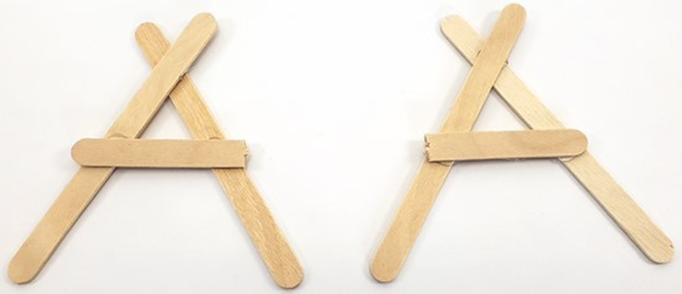
- اپنے نالیدار گتے کے ٹکڑے میں احتیاط سے سلاٹ کاٹیں جو آپ کے A-فریم کے ٹکڑوں کو ایک دوسرے سے چند انچ کے فاصلے پر سیدھے کھڑے ہونے دیں گے۔ A-فریم کے ٹکڑوں کے سروں کو سلاٹوں میں چسپاں کریں۔ اگر ضروری ہو تو گلو/ٹیپ اور کچھ اضافی پاپسیکل اسٹک کے ٹکڑوں سے کنکشن کو مضبوط کریں تاکہ وہ خود ہی کھڑے رہیں۔
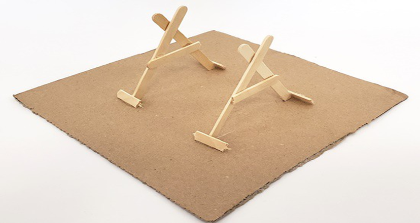
- اب آپ ٹریبوچیٹ کا بازو بنائیں گے۔ سب سے پہلے، AA بیٹری کو پاپسیکل اسٹک کے ایک سرے پر ٹیپ کریں۔
- کاغذی کلپ کے ایک سرے کو موڑ دیں تاکہ یہ تقریباً، لیکن بالکل سیدھا نہ ہو۔ کاغذی کلپ کے باقی فلیٹ حصے کو پاپسیکل اسٹک کے دوسرے سرے سے جوڑیں، سیدھا حصہ باہر کی طرف اور اوپر کی طرف اشارہ کرتے ہوئے (کاؤنٹر ویٹ سے دور)۔ یہ "سلنگ" کو پکڑنے کے لیے ایک ہک کے طور پر کام کرے گا، جو بدلے میں پرکشیپی کو رکھتا ہے۔
- تقریباً ایک انچ لمبا ملک شیک اسٹرا کا ایک چھوٹا سا حصہ کاٹ لیں۔ گلو، ربڑ بینڈ، یا ٹیپ کا استعمال کرتے ہوئے اسے پوپسیکل اسٹک بازو کے ساتھ کھڑا کریں۔ تنکے کو کاؤنٹر ویٹ کے ہک کے مقابلے میں بہت قریب ہونا چاہئے۔ (یہ فاصلہ ایسی چیز ہے جسے آپ بعد میں ایڈجسٹ کرنے کی کوشش کر سکتے ہیں۔)
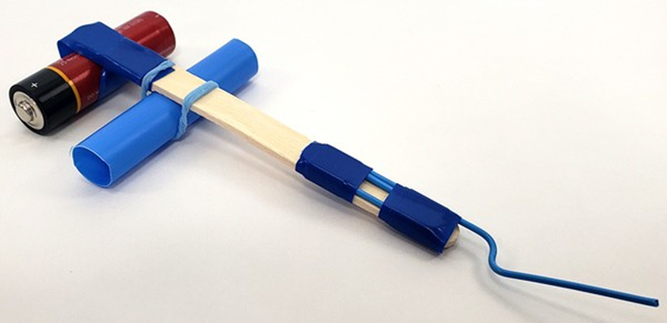
- پنسل کو ملک شیک اسٹرا میں سلائیڈ کریں۔
- پنسل کو اپنے A-فریم کے ٹکڑوں کے اوپر دو V نشانوں میں رکھیں۔ اسے ربڑ بینڈ کے ساتھ جگہ پر محفوظ کریں۔ یہ ایک کراس بار بناتا ہے اور آپ کے ٹریبوچیٹ کے فریم کو مکمل کرتا ہے۔ تنکے اور پنسل ایک محور بناتے ہیں اور بازو کو گھومنے دیتے ہیں۔ (ہم اس مرحلے کے لیے گلو استعمال کرنے کی سفارش نہیں کرتے ہیں- اس طرح آپ کراس بار کو ہٹا سکتے ہیں اور تبدیلیاں کرنے کے لیے بازو کو تبدیل کر سکتے ہیں۔)
- یقینی بنائیں کہ آپ کا ٹریبوچیٹ مضبوط ہے اور فریم ایک ساتھ ہے۔ اپنے ہاتھ سے بازو کو گھمانے کی کوشش کریں۔ اگر کوئی جوڑ کمزور لگتا ہے یا فریم نمایاں طور پر ڈوبتا ہے، تو انہیں ٹیپ، گلو یا ربڑ بینڈ سے مضبوط کریں۔
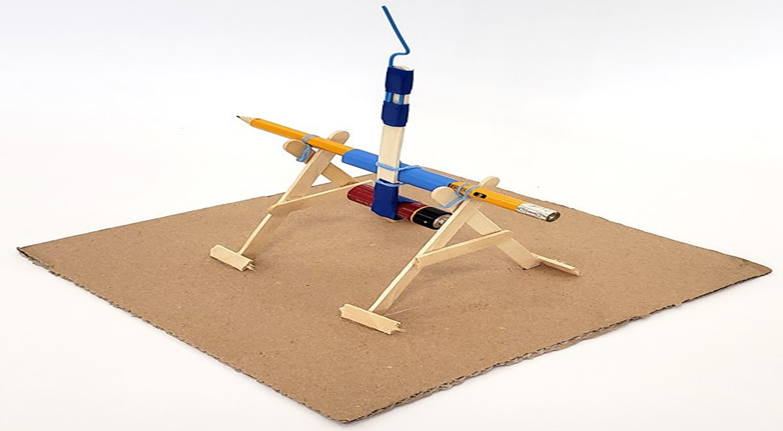
- پنسل سے صافی کو ہٹائیں اور اسے تار کے ایک چھوٹے سے لوپ سے جوڑیں۔ پیپر کلپ ہک سے صافی کو لٹکا دیں۔
- اب یہ آپ کے ٹریبوچیٹ کی جانچ کرنے کا وقت ہے. صافی پر نیچے کھینچنے کے لیے ایک ہاتھ کا استعمال کریں۔ اس سے کاؤنٹر ویٹ ہوا میں اوپر ہونا چاہیے۔ پھر، اس بات کو یقینی بناتے ہوئے کہ کوئی بھی لوگ، جانور یا ٹوٹنے والی چیزیں آس پاس نہیں ہیں، جانے دیں۔
جب آپ صافی کو جانے دیتے ہیں تو کیا ہوتا ہے؟ کیا یہ آگے شروع ہوتا ہے؟ کیا یہ سیدھا ہوا میں اوپر جاتا ہے؟ کیا یہ بالکل جاری کرنے میں ناکام ہے؟
- اب آپ کو بہترین لانچ حاصل کرنے کے لیے اپنے ٹریبوچیٹ کے ساتھ ٹنکر کرنے کی ضرورت پڑ سکتی ہے۔ ٹریبوچیٹ فریم کے نیچے صافی کو کھینچنے کی کوشش کریں۔ یہ ٹھیک ہے اگر صافی زمین پر آرام کر رہا ہو اور سلنگ میں ڈھیل ہو جائے۔ جب کاؤنٹر ویٹ گرے گا، تو یہ صافی کو زمین کے ساتھ گھسیٹے گا اور پھر اسے ہوا میں کھینچ لے گا۔
کیا آپ صافی کے لیے بہترین نقطہ آغاز تلاش کر سکتے ہیں؟ کیا چیز اسے سب سے زیادہ دور تک لے جاتی ہے؟
سرگرمی:
دو مراحل والا بیلون راکٹ بنائیں
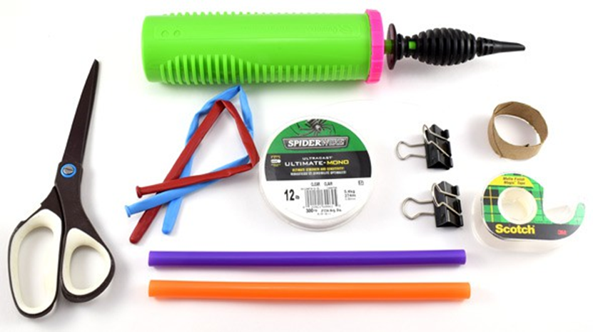
خلاصہ:
تعارف:
اگر آپ نے کبھی ٹی وی پر راکٹ لانچ ہوتے دیکھا ہے تو آپ نے دیکھا ہوگا کہ راکٹ کے متعدد مراحل ہوتے ہیں۔ راکٹ کے کچھ حصے گر کر فضا میں جل جاتے ہیں جبکہ باقی راکٹ چلتا رہتا ہے۔ ایسا کیوں ہوتا ہے؟ غباروں کا استعمال کرتے ہوئے اپنا دو مرحلوں والا راکٹ تلاش کرنے اور بنانے کے لیے اس سرگرمی کو آزمائیں!
مواد:
- دو ماڈلنگ غبارے (یہ لمبے، پتلے قسم کے ہیں جو غبارے کے جانور بنانے کے لیے استعمال ہوتے ہیں، گول قسم کے نہیں۔)
- دو تنکے
- دو بڑے بائنڈر کلپس
- کاغذ کے تولیہ کی ٹیوب
- ماہی گیری کی لکیر یا تار (ایک ماہی گیری لائن عام طور پر بہتر کام کرے گی کیونکہ اس میں کم رگڑ ہوتی ہے۔)
- قینچی
- صاف یا ماسکنگ ٹیپ
- راکٹ لگانے میں مدد کے لیے ایک اور شخص
- غبارہ پمپ، غبارے کو پھلانا آسان بنانے کے لیے (اختیاری)
- کمرے میں فرنیچر کے دو مضبوط ٹکڑے ایک دوسرے سے (جس سے آپ اپنی فشنگ لائن یا تار باندھ سکتے ہیں)—جتنا دور، اتنا ہی بہتر!
- کھلی جگہ جہاں آپ سرگرمی ترتیب دے سکتے ہیں۔
تیاری کا کام:
- ماہی گیری کی لائن کو دیکھنا مشکل ہو سکتا ہے- یقینی بنائیں کہ آپ دوسرے لوگوں کو خبردار کرتے ہیں کہ آپ یہ پروجیکٹ کر رہے ہیں، تاکہ وہ لائن میں نہ آئیں۔
- ماہی گیری کی لائن کو دو تنکے کے ذریعے تھریڈ کریں۔
- فشنگ لائن کے سروں کو فرنیچر کے دو مضبوط ٹکڑوں سے باندھیں اور یقینی بنائیں کہ اسے مضبوطی سے کھینچا گیا ہے۔ آپ جتنی لمبی لائن بنا سکتے ہیں، اتنا ہی بہتر ہے۔
- گتے کی ٹیوب سے ایک چھوٹی انگوٹھی (ایک انچ سے کم لمبی) کاٹ دیں۔
- پھولنے سے پہلے غباروں کو ڈھیلا کرنے کے لیے کھینچیں۔
طریقہ کار:
- پہلے غبارے کو تقریباً تین چوتھائی بھرا ہوا فلائیٹ کریں۔ اپنے مددگار سے غبارے کی نوزل کو چٹکی بھرنے کے لیے کہیں، لیکن اسے نہ باندھیں۔ اختیاری طور پر، آپ نوزل کو چوٹکی لگانے اور غبارے کو گرنے سے روکنے کے لیے بائنڈر کلپ کا استعمال کر سکتے ہیں۔
- پہلے غبارے کی نوزل کو گتے کی انگوٹھی سے کھینچیں اور اسے سائیڈ کے خلاف دبا دیں۔ اس بات کو یقینی بنائیں کہ آپ غبارے کو پھٹنے نہ دیں۔
- دوسرے غبارے کو جزوی طور پر گتے کی انگوٹھی سے تھریڈ کریں، تاکہ اس کی نوزل کا رخ پہلے غبارے کی طرح ہو۔
- دوسرے غبارے کو تقریباً تین چوتھائی بھرا ہوا احتیاط سے فلائیٹ کریں۔ آپ کا مقصد یہ ہے کہ غبارے کو اس طرح پھلایا جائے کہ یہ گتے کی انگوٹھی کے اندر سے اوپر دبائے، اور پہلے غبارے کے بند کی نوزل کو نچوڑے۔ یہ کچھ مشق کر سکتا ہے — صبر کرو! یہ بہت آسان ہو گا اگر آپ کے پاس ایک شخص گتے کی انگوٹھی اور پہلا غبارہ پکڑے جبکہ دوسرا شخص دوسرے غبارے کو فلا کرے۔ اگر آپ یہ بالکل ٹھیک کرتے ہیں، تو آپ کو پہلے غبارے کی نوزل کو ڈیفلیٹ کیے بغیر چھوڑنا چاہیے۔ اگر آپ کو پریشانی ہو تو آپ پہلے غبارے کی نوزل کو ابھی کے لیے بند رکھ سکتے ہیں۔
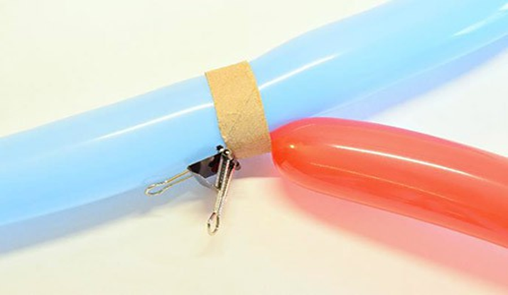
- دوسرے غبارے کے نوزل کو اپنی انگلیوں سے یا بائنڈر کلپ سے بند رکھیں۔
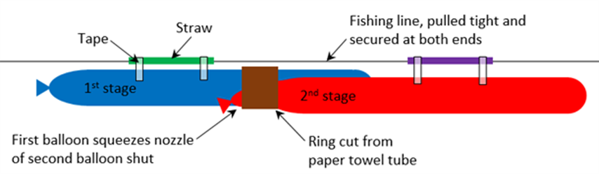
- غباروں کو پینے کے تنکے پر ٹیپ کریں، غبارے ماہی گیری کی لکیر کے ساتھ اشارہ کرتے ہیں۔ اس بات کو یقینی بنانے کی پوری کوشش کریں کہ غبارے اور تنکے سیدھی لائن میں ہوں۔ اگر غبارے بہت مڑے ہوئے ہیں اور تنکے ایک زاویے پر مڑے ہوئے ہیں، تو یہ ماہی گیری کی لکیر میں اضافی رگڑ پیدا کرے گا اور آپ کے راکٹ کو سست کردے گا۔
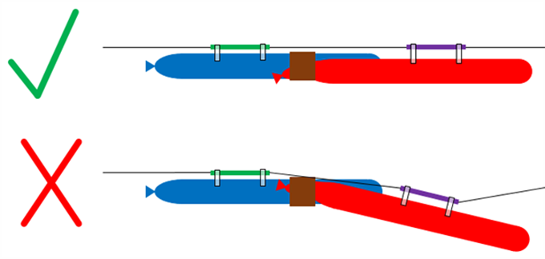
- پیشین گوئی کریں۔
آپ کے خیال میں جب آپ اپنے غباروں کے دونوں نوزلز کو چھوڑیں گے تو کیا ہونے والا ہے؟
- غباروں کو لائن کے ایک سرے تک کھینچیں اور دونوں نوزلز کو چھوڑ دیں۔
کیا ہوا؟ آپ کے دو غبارے راکٹ کے دو مراحل سے کیسے ملتے جلتے ہیں؟ اگر آپ کے پاس صرف ایک غبارہ ہوتا تو آپ کا دو مرحلوں والا راکٹ اس سے کتنا آگے جاتا؟